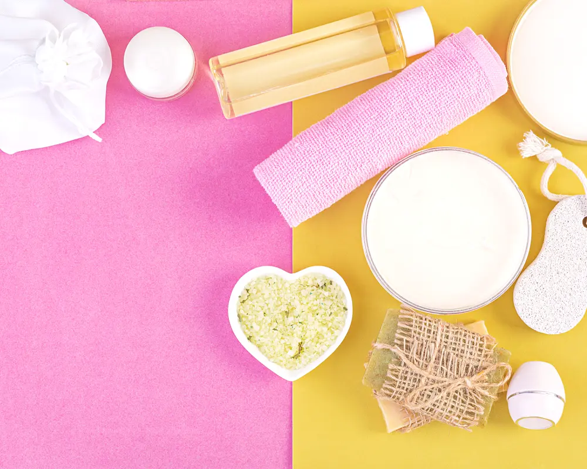

Chemical Peels for Beginners: The Levels Explained
The name scares people off. Chemical peel sounds like your face is going to fall off. It will not. A peel is just a controlled way to remove dull, damaged skin so fresher skin can come through, and the strength is adjustable.

Here is the core idea. A solution goes on your skin for a set amount of time, loosens the outer layer, and encourages it to shed. What sits underneath is newer, smoother, and usually a bit brighter. The whole thing lives or dies on one word, depth, so let us walk through the three levels most people run into.
Light peels
A light peel, sometimes called a superficial peel, only touches the very top layer of skin. It uses gentler acids and does its work quietly. This is the friendliest place to start, and it is what most beginners actually want without realizing it.
What it helps with: dullness, mild unevenness, rough texture, and giving your skin a fresh, well-rested look. The downtime is minimal. You might be a little pink or slightly flaky for a day or two, but plenty of people go right back to normal life. Because it is gentle, a light peel usually works best as a series done over time rather than a single dramatic event.
Medium peels
A medium peel reaches deeper, into the upper part of the layer below the surface. It is stronger, and it targets more stubborn concerns like noticeable sun damage, some discoloration, and finer lines. The trade-off is real downtime.
After a medium peel, expect several days of visible peeling and redness while the old skin sheds and the new skin settles. It is not painful for most people, but it is a look. You will want to plan it around your calendar and stay out of the sun. The results can be more striking than a light peel, which is exactly why it asks more of you in recovery.
Deep peels
Deep peels are the heavy artillery, and they are a different category entirely. They reach well into the deeper skin and are used for significant sun damage, deeper wrinkles, or certain scars. These are serious medical procedures, often involving stronger agents, real recovery time, and close supervision.
A deep peel is not a casual first step, and it is not something you shop for on price. It is a considered decision made with a qualified provider who has examined your skin and your history. Most beginners never need to think about this level. I mention it mainly so you understand the full range and do not confuse a gentle refresh with a major procedure.
Which one should a beginner pick?
Almost always, start light. A light peel lets you see how your skin reacts, builds results gradually, and keeps downtime manageable. From there you and your provider can decide whether stepping up makes sense. Jumping straight to a medium or deep peel without knowing how your skin behaves is how people get discouraged.
Your skin type and tone matter here too. Certain peels behave differently on deeper skin tones and carry a higher risk of discoloration if handled carelessly. This is one more reason the person choosing and applying the peel matters as much as the peel itself. A good provider selects the formula and strength for your specific skin, not a one-size template.
What a session is actually like
For a light or medium peel, the appointment is usually quick. Your skin gets cleansed, the solution is applied and left on for a controlled time, and then it is neutralized or removed. You might feel tingling, warmth, or a mild sting while it works. That sensation is normal and temporary.
Afterward you get aftercare instructions, and following them closely is the difference between a great result and an irritated mess. Gentle cleansing, no picking at flaking skin, plenty of moisture, and strict sun protection. Let the skin shed on its own schedule. Peeling it early can cause marks that stick around.
The honest takeaway
Chemical peels are one of the more approachable treatments once you get past the intimidating name. Start gentle, protect your skin from the sun, and treat it as a gradual improvement rather than an overnight transformation. Done thoughtfully, a peel is a simple, effective way to freshen tired skin and even out tone, without a needle or a laser in sight.